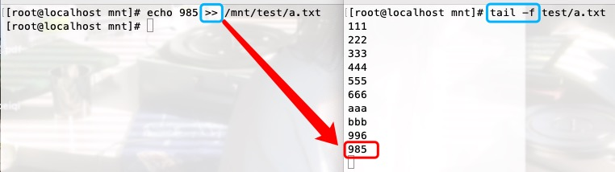

文件管理之基础命令
根目录结构¶
目录指的就是文件夹
Ps: 文件夹里存放的是具体有哪些文件;文件里存放的是具体的数据.
Windows: 以多根的方式组织文件 C: D: E:
Linux: 以单根的方式组织文件/ 是以树形的结构来组织文件
■ bin -> usr/bin 普通用户使用的命令
Ps: -> 代表 根下的bin文件夹 /bin 是 /usr/bin 文件夹的 快捷方式.. 官方称为 软链接
■ sbin -> usr/sbin 管理员使用的命令
■ boot 存放启动相关的文件
例如 kernel内核, grub引导装载程序
■ dev 设备文件
/dev/sda 硬盘 s指硬盘接口SCSI;d是disk硬盘;a代表第一块
/dev/cdrom /dev/sr0 光驱光盘镜像设备
用来为我们的操作系统补充包,因为最小化安装只是将一部分内容写入到了硬盘
/dev/null 黑洞文件,把不想要显示的内容丢入黑洞..只进不出 通常写脚本软件的时候会用
/dev/pts/0 虚拟的Bash Shell终端,提供给远程用户使用
aa0代表第一个终端 1代表第2个终端 以此类推
■ etc 配置文件,很重要,系统级服务配置文件都在这里
/etc/hostname 系统主机名配置文件
/etc/sysconfig/network-scripts/ifcfg-ens33 网卡配置文件
/etc/resolv.conf 指定远程DNS的地址
/etc/hosts 本机的域名解析文件
/etc/sysconfig/selinux SELINUX配置文件
■ home /home/dc 普通用户dc的家目录
■ root /root 管理员root用户的家目录
■ lib -> usr/lib lib64 -> usr/lib64 库文件
里面时操作系统这个软件所引用所依赖的库
■ media mnt opt 都是空文件夹 移动设备(eg U盘)的 挂载点 media是默认的
■ proc process的缩写,放的是进程相关的内容
/proc/sys/net/ipv4 内核参数优化文件
cat /proc/sys/net/ipv4 /tcp_max_syn_backlog 半连接池
■ run 存放程序运行后所产生的pid(进程编号)文件
■ srv 物理设备产生的一些文件 空文件夹
■ sys 硬件设备的驱动程序信息,不要动它
■ tmp 临时存放文件,类似于回收站,系统会定时删除该目录下长时间没有访问的文件
■ usr 与系统有关的文件,相当于C:\Windows
■ var 存放的是一些变化文件 eg: 数据库、日志、邮件等
/var/lib/mysql mysql
/var/ftp vsftpd
/var/spool/mail mail
/var/spool/cron cron
log
/var/log 系统日志文件存放目录
/var/log/messages 系统日志
/var/log/secure 系统登录日志
/var/tmp 临时文件(主要是程序产生的临时文件)
Ps: tail -f /var/log/messages 动态查看日志文件
[root@localhost ~]# ls -l /
总用量 28
lrwxrwxrwx. 1 root root 7 6月 30 18:17 bin -> usr/bin
dr-xr-xr-x. 5 root root 4096 6月 30 23:49 boot
drwxr-xr-x 21 root root 3360 7月 4 22:54 dev
drwxr-xr-x. 144 root root 8192 7月 5 14:39 etc
drwxr-xr-x. 4 root root 32 7月 4 16:51 home
lrwxrwxrwx. 1 root root 7 6月 30 18:17 lib -> usr/lib
lrwxrwxrwx. 1 root root 9 6月 30 18:17 lib64 -> usr/lib64
drwxr-xr-x. 2 root root 6 4月 11 2018 media
drwxr-xr-x. 3 root root 18 6月 30 23:42 mnt
drwxr-xr-x. 3 root root 16 6月 30 18:25 opt
dr-xr-xr-x 214 root root 0 7月 4 22:54 proc
dr-xr-x---. 14 root root 4096 7月 4 22:55 root
drwxr-xr-x 41 root root 1240 7月 5 15:58 run
lrwxrwxrwx. 1 root root 8 6月 30 18:17 sbin -> usr/sbin
drwxr-xr-x. 2 root root 6 4月 11 2018 srv
dr-xr-xr-x 13 root root 0 7月 5 18:23 sys
drwxrwxrwt. 31 root root 4096 7月 5 17:42 tmp
drwxr-xr-x. 13 root root 155 6月 30 18:17 usr
drwxr-xr-x. 21 root root 4096 6月 30 18:47 var
[root@localhost ~]# which ls
alias ls='ls --color=auto'
/usr/bin/ls
[root@localhost ~]# /usr/bin/ls
anaconda-ks.cfg 公共 视频 文档 音乐
initial-setup-ks.cfg 模板 图片 下载 桌面
[root@localhost ~]# /bin/ls
anaconda-ks.cfg 公共 视频 文档 音乐
initial-setup-ks.cfg 模板 图片 下载 桌面
# [TCP的半连接池]
# grep过滤筛选..
# 内核相当一部分的优化,即与网络参数优化相关的文件 都在 /proc/sys/net/ipv4 该文件夹下面
[root@localhost ~]# ls /proc/sys/net/ipv4/ | grep backlog
tcp_max_syn_backlog
[root@localhost ~]# cat /proc/sys/net/ipv4/tcp_max_syn_backlog
128
# `pwd` 查看当前所在文件夹的完整路径
[root@localhost ~]# pwd
/root
# `cd` 切换文件夹
[root@localhost ~]# cd /root
路径¶
绝对路径: 路径是从根开始的,即以/作为前缀
eg: /etc/sysconfig/network-scripts/ 只有第一个右斜杠代表根文件夹, 其余的都是路径分隔符
/etc/////sysconfig///////network-scripts 与 /etc/sysconfig/network-scripts 效果是一样的!
相对路径: 只要路径不是以/开头, 会以当前所在文件夹的路径为开头"即pwd的结果"进行拼接
[root@localhost ~]# pwd
/root
# 进行拼接 相当于访问路径 /root/etc/sysconfig/network-scripts/ifcfg-ens33
[root@localhost ~]# ls etc/sysconfig/network-scripts/ifcfg-ens33
ls: 无法访问etc/sysconfig/network-scripts/ifcfg-ens33: 没有那个文件或目录
[root@localhost ~]# cd /etc/
[root@localhost etc]# pwd
/etc
# 进行拼接 相当于访问路径 /etc/sysconfig/network-scripts/ifcfg-ens33
[root@localhost etc]# ls sysconfig/network-scripts/ifcfg-ens33
sysconfig/network-scripts/ifcfg-ens33
. 链接到当前目录
.. 链接到上一级目录
~ 当前用户的家目录 若是管理员: ～/anaconda-ks.cfg等同于/root/anaconda-ks.cfg
文件操作基础命令¶
命令连接的两种方式¶
命令连接的两种方式:
1> 分号连接 -- 从左往右依次运行,不管是否出错
ls;pwd;echo 123
2> &&符号连接 -- 从左往右依次运行,直到出错,后面的就不会再运行啦
ls&&pwd&&echo 123
pwd¶
查看当前所在目录
pwd 查看当前所在文件夹路径
cd¶
切换目录
cd 默认切回家目录
cd ～ 切到家目录
cd - 切到上一次所在文件夹/目录
cd . 在当前文件夹不动
cd .. 切到上一级文件夹
[root@localhost ~]# cd /etc/sysconfig/network-scripts/
[root@localhost network-scripts]# cd .
[root@localhost network-scripts]# cd ..
[root@localhost sysconfig]#
ls¶
浏览
ls -l 文件 查看指定文件的具体信息
ls -l 文件夹 查看指定文件夹下的子文件与子文件夹的信息
ls -dl 文件夹 查看指定文件夹/目录本身的信息
当然可以通过查看上一级-l来达到相同的目的,但结果不是很直接
ls -al 浏览的结果中包含隐藏文件
可以发现每个文件夹下都有两个特殊的文件夹.和..
"""
文件类型和权限 -rw-r--r--
硬链接的个数 1
属主(文件主人) root
属组(用户组) root （简单理解就是哪个部门）
文件字节大小 2351
创建修改时间 7月4日 16:51
文件名/文件路径 /etc/passwd
敲黑板: linux不是以文件的后缀名来区分文件类型的,而是以ls -l的首位来区分的 -rw-r--r--
- 文本文件
d 目录/文件夹
l link软连接
后面的9位表示权限 3位为一组,文件主人、用户组、其他人(不是文件主人,也不是组里的用户)
r 读; -- cat可以看里面的内容
w 写; -- 在文件夹里创建删除子文件和子文件夹,vim修改文件内容
x 执行; -- 文件可能是一条命令,能否运行 能否切换cd到此文件
Ps: -rw-r--r--. 若最后还有个点,表示此文件是在SElinux已加载状态下创建,此文件受SElinux的管制
"""
[root@localhost sysconfig]# ls -l /etc/passwd
-rw-r--r-- 1 root root 2351 7月 4 16:51 /etc/passwd
[root@localhost /]# ls -dl /etc
drwxr-xr-x. 144 root root 8192 7月 5 21:32 /etc
[root@localhost /]# ls -a
. .autorelabel boot etc lib media opt root sbin sys usr
.. bin dev home lib64 mnt proc run srv tmp var
tree¶
查看目录树
linux一切皆文件,笼统来说,文件夹本身也是一种文件Hhhh
yum install tree -y
tree /boot/ 显示所有文件,不包括隐藏文件
tree -a /boot/ 显示所有文件,包括隐藏文件
tree -ad /boot/ 只显示文件夹,不显示文件
tree -L 1 /boot/ 遍历目录的最大层数,-L后应该是大于0的正整数 这里是1 表示只显示/boot/的儿子
tree -F 目录 -F 在条目后加上文件类型的指示符号,例如会在显示出的目录后面加上左斜杠/
# 自个儿在家目录下创建了tree_test目录,以便实验
[root@localhost ~]# tree ~/tree_test/
/root/tree_test/
└── a
└── b
2 directories, 0 files
[root@localhost ~]# tree -a ~/tree_test/
/root/tree_test/
├── a
│ ├── b
│ └── .c
└── .a.txt
3 directories, 1 file
[root@localhost ~]# tree -ad ~/tree_test/
/root/tree_test/
└── a
├── b
└── .c
3 directories
[root@localhost ~]# tree -L 1 ~/tree_test/
/root/tree_test/
└── a
1 directory, 0 files
[root@localhost ~]# tree -aL 1 ~/tree_test/
/root/tree_test/
├── a
└── .a.txt
1 directory, 1 file
[root@localhost ~]# tree -aF ~/tree_test/
/root/tree_test/
├── a/
│ ├── b/
│ └── .c/
└── .a.txt
3 directories, 1 file
创建¶
touch¶
touch创建的是普通文本文件,与文件后缀名无关!!!后缀名仅仅是为了便于识别的.
我们习惯于通常是加txt的后缀.
可以用绝对路径, 若用相对路径的话,就建在当前位置啦..
touch file1.txt 无则创建,有则修改文件的时间
批量创建文件
touch a.txt b.txt c.txt
touch {d,e,f}.txt
touch {1..6}.txt
touch {a..c}.txt
touch {1..3}{a..b}.txt 会进行排列组合!这里共会有6个文件
touch ego{n,N}.txt 相当于 touch egon.txt egoN.txt
[root@localhost opt]# touch a.txt b.txt c.txt
[root@localhost opt]# ls
a.txt b.txt c.txt
[root@localhost opt]# touch {d,e,f}.txt
[root@localhost opt]# ls
a.txt b.txt c.txt d.txt e.txt f.txt
[root@localhost opt]# rm -rf # 注意哦,无效!没啥效果..
[root@localhost opt]# rm -rf b.txt
[root@localhost opt]# rm -rf *
# 等同于 touch /opt/{1..6}.txt
[root@localhost opt]# touch {1..6}.txt
[root@localhost opt]# ls
1.txt 2.txt 3.txt 4.txt 5.txt 6.txt
[root@localhost opt]# rm -rf *
[root@localhost opt]# touch {a..d}.txt
[root@localhost opt]# ls
a.txt b.txt c.txt d.txt
[root@localhost opt]# rm -rf *
[root@localhost opt]# touch {1..3}{a..b}.txt
[root@localhost opt]# ls
1a.txt 1b.txt 2a.txt 2b.txt 3a.txt 3b.txt
"""
rm -rf *
删除当前opt文件夹下的所有内容
r递归删,删文件夹必须加;
f强制删,不管是删文件还是文件夹都不会询问是否删除,不会提示啦！
"""
[root@localhost opt]# rm -rf *
[root@localhost opt]# ls -l
总用量 0
mkdir¶
mkdir “make diretory” 用于创建文件夹/目录
○ 相对路径与绝对路径创建目录
○ 结合花括号批量创建目录
○ -v 反馈创建成功的信息
○ -p 根据路径 递归的创建 目录
# 绝对路径创建目录
[root@localhost /]# mkdir /opt/test
[root@localhost /]# cd /opt/test
# 相对路径创建目录
[root@localhost test]# mkdir a b
[root@localhost test]# ls
a b
# 绝对路径结合{}花括号
[root@localhost test]# mkdir /opt/test/{c,d}
[root@localhost test]# ls
a b c d
# -v 反馈创建的信息
[root@localhost test]# mkdir -v {mmm,nnn}
mkdir: 已创建目录 "mmm"
mkdir: 已创建目录 "nnn"
[root@localhost test]# ls
a b c d mmm nnn
# 因为a文件夹下没有b文件夹 所以c文件夹创建失败
[root@localhost test]# mkdir a/b/c
mkdir: 无法创建目录"a/b/c": 没有那个文件或目录
# -p 递归的创建文件夹
[root@localhost test]# mkdir -p a/b/c
[root@localhost test]# mkdir -p /opt/test/x/y/z
[root@localhost test]# tree
.
├── a
│ └── b
│ └── c
├── b
├── c
├── d
├── mmm
├── nnn
└── x
└── y
└── z
11 directories, 0 files
复制¶
cp¶
cp "copy" 用于复制文件、文件夹/目录..
原理: 找到源文件,创建一个新的空文件,将源文件的内容读取出来写到新文件中.cp 四大选项 -r｜-a｜-f ｜-i
cp 文件源路径 文件目标路径
cp /etc/passwd . 把passwd文件拷贝到当前文件夹下, 新文件名不变
cp /etc/passwd ./h.txt 把passwd文件拷贝到/opt文件夹下, 新文件名命名为h.txt
[root@localhost opt]# pwd
/opt
[root@localhost opt]# ls
[root@localhost opt]# ls -l
总用量 0
"""
这里的.指代当前所在目录/opt
cp /etc/passwd ./h.txt 等同于 cp /etc/passwd /opt/h.txt
"""
[root@localhost opt]# cp /etc/passwd . # 拷贝过来不改名
[root@localhost opt]# cp /etc/passwd ./h.txt # 拷贝过来并改名 h.txt文件不用事先存在
[root@localhost opt]# ls -l
总用量 8
-rw-r--r-- 1 root root 2351 7月 6 17:07 h.txt
-rw-r--r-- 1 root root 2351 7月 6 17:06 passwd
"""
/opt下没有test文件夹,所以失败
"""
[root@localhost opt]# cp /etc/passwd ./test/h2.txt
cp: 无法创建普通文件"./test/h2.txt": 没有那个文件或目录
cp -r¶
cp -r 源文件夹 目标文件夹 # 目标文件夹下有个跟源文件夹同名的子文件夹
cp -r 源文件夹/* 目标文件夹 # 把源文件夹的子子孙孙拷贝到目标文件夹下,不包括源文件夹这一层
敲黑板! 拷贝文件夹必须加-r
"""
注意哦,这里是把根目录下的boot文件夹拷贝到了opt文件夹下,还带着boot这个文件夹
"""
[root@localhost opt]# cp -r /boot/ /opt
[root@localhost opt]# ls -l
总用量 4
dr-xr-xr-x 5 root root 4096 7月 6 17:31 boot
"""
有可能,我们的需求是将boot文件夹下的所有内容(即boot的子子孙孙)拷贝到 opt文件夹里,不需要boot这一层文件夹
"""
[root@localhost opt]# rm -rf *
[root@localhost opt]# ls -l
总用量 0
[root@localhost opt]# cp -r /boot/* /opt
[root@localhost opt]# ls
config-3.10.0-1160.66.1.el7.x86_64
config-3.10.0-1160.el7.x86_64
efi
grub
grub2
initramfs-0-rescue-be87405afe3b480da138503ccab0ebd2.img
initramfs-3.10.0-1160.66.1.el7.x86_64.img
initramfs-3.10.0-1160.el7.x86_64.img
symvers-3.10.0-1160.66.1.el7.x86_64.gz
symvers-3.10.0-1160.el7.x86_64.gz
System.map-3.10.0-1160.66.1.el7.x86_64
System.map-3.10.0-1160.el7.x86_64
vmlinuz-0-rescue-be87405afe3b480da138503ccab0ebd2
vmlinuz-3.10.0-1160.66.1.el7.x86_64
vmlinuz-3.10.0-1160.el7.x86_64
cp -a¶
拷贝过程中将所有的信息一摸一样的给新文件
cp -a /home/dc/a.txt /mnt/b.txt
△ 普通用户dc在家目录下创建文件a.txt
[dc@localhost ~]$ pwd
/home/dc
[dc@localhost ~]$ ls
[dc@localhost ~]$ touch a.txt
[dc@localhost ~]$ ll
总用量 0
-rw-rw-r-- 1 dc dc 0 7月 6 21:34 a.txt
△ root用户是管理员,是有权限看到普通用户dc家目录里的内容的
"""
root用户通过拷贝dc家目录下的a.txt文件到/mnt/文件夹下,
发现拷贝文件的 所属人和用户组 都从dc变成了root 因为是root执行的cp命令
"""
[root@localhost ~]# pwd
/root
[root@localhost ~]# ls
anaconda-ks.cfg 公共 视频 文档 音乐
initial-setup-ks.cfg 模板 图片 下载 桌面
[root@localhost ~]# ll /home/dc/a.txt
-rw-rw-r-- 1 dc dc 0 7月 6 21:34 /home/dc/a.txt
[root@localhost ~]# cp /home/dc/a.txt /mnt/
[root@localhost ~]# ll /mnt/a.txt
-rw-r--r-- 1 root root 0 7月 6 21:37 /mnt/a.txt
"""
若想在拷贝过程中将所有的信息一摸一样的给新文件,需要加 -a 选项
注意: 必须是root用户操作才有用,普通用户加-a选项无效
"""
[root@localhost ~]# cp -a /home/dc/a.txt /mnt/b.txt
[root@localhost ~]# ll /mnt/b.txt
-rw-rw-r-- 1 dc dc 0 7月 6 21:34 /mnt/b.txt
cp -f¶
-f选项与权限打了个交道
cp -f /opt/test/a.txt /opt/test1/a.txt
当前用户对目标文件夹/test1有wx权限 (这是大前提!!!)
但是当前用户对目标文件/test1/a.txt没有写权限. 在拷贝时候,cp命令可以加上-f选项, -f选项会先执行rm -rf /test1/a.txt删除目标文件,再执行cp /opt/test/a.txt /opt/test1!!!
"""
△ 登录root账户,进行以下的准备工作
root用户在opt空文件夹里创建了test与test1文件夹,并在两个文件夹里都创建了名为a.txt的文件
往test/a.txt输入内容'000';往test1/a.txt输入内容'111'
"""
[root@localhost opt]# mkdir test test1
[root@localhost opt]# touch test/a.txt
[root@localhost opt]# touch test1/a.txt
[root@localhost opt]# echo "000" > test/a.txt
[root@localhost opt]# echo "111" > test1/a.txt
[root@localhost opt]# cat test/a.txt
000
[root@localhost opt]# cat test1/a.txt
111
[root@localhost opt]# ll -d test1/
drwxr-xr-x 2 root root 19 7月 6 22:20 test1/
[root@localhost opt]# ll test/a.txt
-rw-r--r-- 1 root root 4 7月 6 22:21 test/a.txt
[root@localhost opt]# ll test1/a.txt
-rw-r--r-- 1 root root 4 7月 6 22:21 test1/a.txt
"""
我们知道cp拷贝的本质是:找到源文件,创建一个新的空文件,将源文件的内容读取出来写到新文件中.
现在登录了用户m,对下面这两种情况进行分析
★ 情况1>
rm -rf /opt/test1/a.txt # 注意哦,这里先把test1文件夹下的a.txt文件删除掉啦
[root@localhost opt]# tree
.
├── test
│ └── a.txt
└── test1
2 directories, 1 files
cp /opt/test/a.txt /opt/test1
用户m需要有对/opt/test/a.txt文件拥有读权限
以及 对/opt/test1文件拥有x可执行权限(切进test1这个目录)和w写权限(往test1文件夹里写入新文件a.txt)
只是cp操作的话,用户m对/opt/test1的写权限的话没必要有
但通过观察 /opt/test1的权限为 drwxr-xr-x 发现现在除了root用户的其他用户对test1文件夹都没写权限
所以用户m是普通用户dc时.执行这条命令会反馈权限不够.
[dc@localhost ~]$ cp /opt/test/a.txt /opt/test1
cp: 无法创建普通文件"/opt/test1/a.txt": 权限不够
[解决方案]:用root账户更改其它用户(用户dc)对test1文件夹的权限,让其至少拥有写权限和执行权限 -wx
# 这里让其他用户拥有r权限,是方便普通用户dc使用tree以及ls命令查看test1文件夹
[root@localhost opt]# chmod o=rwx test1/
[root@localhost opt]# ll -d test1/
drwxr-xrwx 2 root root 19 7月 6 22:58 test1/
登录普通用户dc,执行以下命令..
[dc@localhost ~]$ cp /opt/test/a.txt /opt/test1/
[dc@localhost ~]$ tree /opt
/opt
├── test
│ └── a.txt
└── test1
└── a.txt
2 directories, 2 files
# 这是dc用户执行拷贝命令创建的文件a.txt 所以其用户和用户组都是dc
[dc@localhost ~]$ ll /opt/test1/a.txt
-rw-r--r-- 1 dc dc 4 7月 6 22:58 /opt/test1/a.txt
[dc@localhost ~]$ cat /opt/test1/a.txt
000
★ 情况2>
[root@localhost opt]# tree
.
├── test
│ └── a.txt
└── test1
└── a.txt
2 directories, 2 files
[root@localhost opt]# ll -d /opt/test1
drwxr-xr-x 2 root root 19 7月 6 23:35 /opt/test1
[root@localhost opt]# ll /opt/test1/a.txt
-rw-r--r-- 1 root root 4 7月 6 23:35 /opt/test1/a.txt
cp /opt/test/a.txt /opt/test1/a.txt
用户m需要有对/opt/test/a.txt文件拥有读权限,以及对/opt/test1/a.txt拥有写权限
但通过观察/opt/test1/a.txt的权限为-rw-r--r--,发现其他用户对此文件只有读权限..
若用户m是普通用户dc,执行 cp /opt/test/a.txt /opt/test1/a.txt
理想情况下,linux底层会将源文件读出来往新文件里面写,新文件若已经存在,就不会新创建啦,会覆盖掉..
但权限不够啊！！！
# 最直白的原因,a.txt文件已经存在了,dc用户没有往里面写的权限
[dc@localhost ~]$ cp /opt/test/a.txt /opt/test1/a.txt
cp: 无法创建普通文件"/opt/test1/a.txt": 权限不够
[解决方案] cp使用选项 -f 如果有需要,删除已存在的目的文件.. 相当于变成情况一的样子!!
# 但依然提示权限不够,那是因为其他用户对/opt/test1没有写权限导致的
[dc@localhost ~]$ cp -f /opt/test/a.txt /opt/test1/a.txt
cp: 无法删除"/opt/test1/a.txt": 权限不够
# 添加其他用户对/opt/test1的写权限
[root@localhost opt]# chmod o=rwx test1/
[root@localhost opt]# ll -d test1/
drwxr-xrwx 2 root root 19 7月 6 23:35 test1/
# 再执行命令
[dc@localhost ~]$ cp -f /opt/test/a.txt /opt/test1/a.txt
[dc@localhost ~]$ cat /opt/test1/a.txt
000
"""
cp -i¶
-i 选项与交互有关,给提示
有的系统在安装的时候,
cp - i的 alias别名就是cp, 也就是说在执行cp的时候, 其实是执行的cp -i
# 处于安全考虑,root用户下对cp命令有改造,但普通用户下没有对cp命令的改造!!
[root@localhost mnt]# alias
alias cp='cp -i'
alias mv='mv -i'
alias rm='rm -i'
... ... ...
[root@localhost mnt]# mkdir a b
[root@localhost mnt]# touch a/m.txt
[root@localhost mnt]# touch b/m.txt
[root@localhost mnt]# echo "111" > a/m.txt
[root@localhost mnt]# echo "222" > b/m.txt
[root@localhost mnt]# cat a/m.txt
111
[root@localhost mnt]# cat b/m.txt
222
[root@localhost mnt]# cp a/m.txt b/m.txt
cp：是否覆盖"b/m.txt"？ n
不想要提示的解决方案:
1> unalias cp
2> /usr/bin/cp
3> \cp a/m.txt b/m.txt
移动与删除¶
mv¶
类似于window里的剪切..
■ 移动文件
[root@localhost mnt]# mkdir test1 test2
[root@localhost mnt]# touch test1/a.txt
[root@localhost mnt]# touch test1/b.txt
[root@localhost mnt]# tree
.
├── test1
│ ├── a.txt
│ └── b.txt
└── test2
2 directories, 2 files
[root@localhost mnt]# mv test1/a.txt test2/
[root@localhost mnt]# mv test1/b.txt test2/bbb.txt
[root@localhost mnt]# tree
.
├── test1
└── test2
├── a.txt
└── bbb.txt
2 directories, 2 files
# 同一个文件夹下给文件改名的操作
[root@localhost mnt]# mv test1/a.txt test1/b.txt
■ 移动文件夹
[root@localhost mnt]# mkdir -p test1/a/b/c
[root@localhost mnt]# mkdir test2
[root@localhost mnt]# touch test1/a/b/c/a.txt
[root@localhost mnt]# tree
.
├── test1
│ └── a
│ └── b
│ └── c
│ └── a.txt
└── test2
5 directories, 1 file
[root@localhost mnt]# mv test1/a/ test2/
[root@localhost mnt]# tree
.
├── test1
└── test2
└── a
└── b
└── c
└── a.txt
5 directories, 1 file
# 为移动的文件夹重新命了名..
[root@localhost mnt]# mv test2/a/ test1/xxx
[root@localhost mnt]# tree
.
├── test1
│ └── xxx
│ └── b
│ └── c
│ └── a.txt
└── test2
5 directories, 1 file
■ 移动文件夹内容(子子孙孙),不包括文件夹这一层
[root@localhost mnt]# mkdir -p test1/mmm
[root@localhost mnt]# mkdir test2/
[root@localhost mnt]# touch test1/mmm/{1..3}.txt
[root@localhost mnt]# tree
.
├── test1
│ └── mmm
│ ├── 1.txt
│ ├── 2.txt
│ └── 3.txt
└── test2
3 directories, 3 files
# mmm文件夹还在,mmm文件夹的子子孙孙被移动走了
[root@localhost mnt]# mv test1/mmm/* test2/
[root@localhost mnt]# tree
.
├── test1
│ └── mmm
└── test2
├── 1.txt
├── 2.txt
└── 3.txt
3 directories, 3 files
rm¶
注意! rm 的 -f选项 与 cp的 -f选项是不一样的!!!
查看文件内容¶
△ 数据准备
[root@localhost mnt]# mkdir test
[root@localhost mnt]# touch test/a.txt
[root@localhost mnt]# vim test/a.txt
"""
111
222
333
444
555
666
aaa
bbb
"""
cat¶
-n 显示行号
-A 包括控制字符(换行符 /n 代表换行)
Ps: linux下cat查看显示为$ ; Window下为 ^M$
head¶
只查看文件的头几行,默认是头10行.
tail¶
只查看文件的末尾几行,默认是后10行.
tail -f /mnt/test/a.txt 动态监测某个文件的变化! 只要往文件里新增内容,它就会变化!
注意！！！
vim的原理是将文件内容一下子从硬盘全部读到内存中,在内存中改完后,再一次性全部覆盖硬盘的原文件..
So, vim编辑不是在原有的基础上新增!!类似的有 pycharm、word等原理一致..
所以切记在线上环境别用vim打开一个大文件!内存被挤爆,直接卡死...
那如何新增？用echo命令.. 一个 > 的话是覆盖; 两个 > 是往文件内容末尾追加内容!

[root@localhost mnt]# tail -n 4 test/a.txt
555
666
aaa
bbb
[root@localhost mnt]# tail -n 4 test/a.txt | head -2
555
666
其他¶
less 可以上下键来回翻页查看
more 按空格键一页页翻, 有百分比显示..